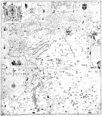

Nieuwe und grundtlycke bescrijvinghe der landtschappen van OuerIsel und Friesslandt sampt de Omlanden van Groeningen [...] nu nieuwes gemaeckt en vith gegeven door Johan van Doetecum tot Rotterdam. Baptista a Doetecum fecit. [Schaal circa l:195.000.] 6 bladen, kopergravure, 870 x 760 mm. Rotterdam, Johan van Doetecum, [circa 1606.] -- (COLLBN 006-11-004/006)
De omwenteling in de cartografie die zich in verscheidene landen in West-Europa in de eerste helft van de zestiende eeuw ongeveer tegelijkertijd voordeed, was te danken aan de toepassing van nieuwe instrumenten en methoden in de landmeetkunde. In de Nederlanden heeft de universiteit van Leuven bij de verspreiding van die kennis een beslissende rol gespeeld. De hoogleraar Gemma Frisius, auteur van een bekend boekje over het in kaart brengen van grotere gebieden, verzorgde daar het onderwijs in de mathematica en de praktische toepassingen, terwijl van Jacob van Deventer, de eerste Nederlandse cartograaf die de nieuwe methode van veelhoeksmeting in praktijk bracht, bekend is dat hij zelfs nog eerder dan Gemma Frisius aan dezelfde universiteit was ingeschreven. Aan Van Deventer hebben we de eerste regionale karteringen van Nederlandse gewesten op basis van driehoeksmeting te danken. De kwaliteit ervan was zo goed, dat ze tot ver in de zeventiende eeuw hun invloed hebben behouden.
Ook deze kaart van Noordoost-Nederland, die op grond van inhoudelijke gegevens in de hier getoonde staat omstreeks 1606 gedateerd moet worden, gaat uiteindelijk terug op de kaart die Van Deventer in 1545 uitgaf en waarvan de oudste bekende variant uit 1559 dateert. Latere kaarten, zoals Friesland door Sibrandus Leo (1579) en Gelderland door Christiaan Sgroten, hebben echter ook als bron gediend. Een bijzonder kenmerk van zowel de gedrukte als de getekende kaarten is tot ver in de zeventiende eeuw de artisticiteit die in de vormgeving tot uitdrukking komt, met name in de stijl van graveren en de toepassing van ornamenten. De krachtige gravure van Baptista van Doetecum, de met grote zorg bewerkte cartouches in Vlaamse renaissancestijl, de levendige tekening van de zee en het grote formaat maken deze kaart tot een indrukwekkend product van de Noord-Nederlandse cartografen uit de zestiende eeuw. Enige restanten van uitgewiste gravures en vrij nauwkeurig te dateren toevoegingen tonen aan dat we hier te maken hebben met een latere staat van een kaart die in haar oorspronkelijke uitgave twintig jaar vroeger gedateerd moet worden. Restanten van het oorspronkelijke jaar van uitgave doen denken aan het jaar 1585 of 1587.
Literatuur
- S.J. Fockema Andreae, Van Doetecom’s kaart van 1606 van OverIsel und Friesslandt. Assen 1945.
- G. Schilder, Monumenta cartographica Neerlandica. I. Alphen aan den Rijn 1986, p. 3-37.